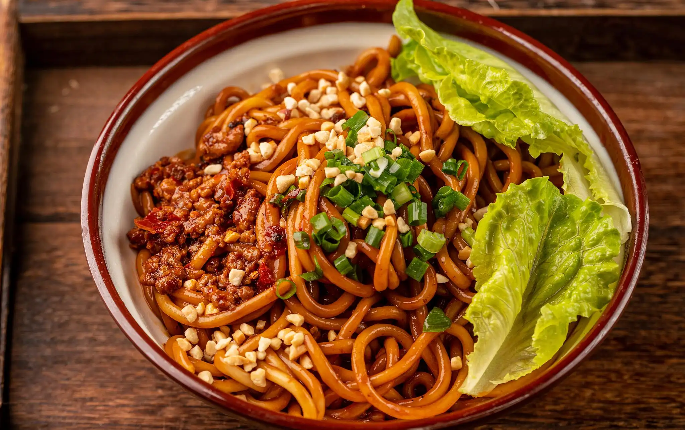

武汉热干面
是武汉最出名的小吃之一，有多种做法，其采用碱水面，并以食油、芝麻酱、色拉油、香油、红油,细香葱、大蒜子、萝卜丁、酸豆角、卤水汁、生抽、醋等为辅助材料。 热干面色泽黄而油润，味道鲜美，由于热量高，也可以当作主食，营养早餐，补充人体所需的能量。
土家酱香饼
简称酱香饼或香酱饼，是湖北恩施土家族苗族自治州的一种特有的小吃，又号称“中国披萨”。制作材料有面粉、甜面酱、郫县豆瓣酱等。 土家酱香饼以香、甜、辣、脆为主要特点，它辣而不燥，外脆里软。
小吃系列
荆州鱼糕
东坡饼
老城通豆皮